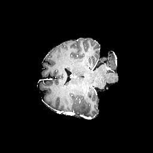
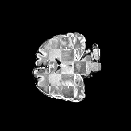

Preprocessing QC
public-ucsd-ptgbm-case
Research use only. This output is a recurrence-risk heatmap in baseline space and is not a clinical dose recommendation.
Preprocessing Summary
| Shapei | 256 x 256 x 256 |
|---|---|
| Spacing mmi | 1.0 / 1.0 / 1.0 |
| Brain mask voxelsi | 1485184 |
| Brain mask fractioni | 8.85% |
| Baseline tumor voxelsi | 5764 |
| Baseline tumor fractioni | 0.39% of brain mask |
| Skull strippingi | proxy-only; dedicated skull stripping not yet applied |
| Bias correctioni | not applied |
| FLAIR alignmenti | header-affine resampling to baseline T1c grid |
| Registration QCi | T1c/FLAIR checkerboard plus mask overlays; source FLAIR matched T1c before preprocessing: None |
| Viewer slicesi | 63 |
No automatic preprocessing QC flags.
Mask Controls
Axial Preprocessing Viewer


